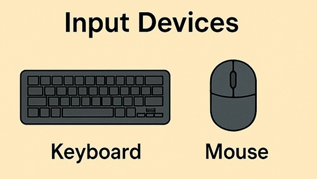
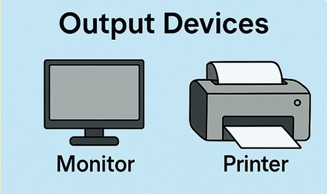

Un computer, per quanto potente, è inutile se isolato. Le periferiche sono i "sensori" e la "voce" del PC. Si dividono in due grandi famiglie in base alla direzione in cui viaggiano i dati.

Sono gli strumenti che permettono a te di inviare comandi e dati al computer. Trasformano i tuoi movimenti fisici o la tua voce in segnali digitali.

Sono gli strumenti che permettono al computer di inviare informazioni a te. Traducono i bit elaborati dalla CPU in luci, suoni o oggetti fisici.